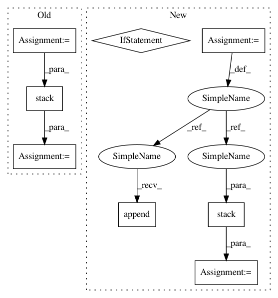

68fbfd1876c367323acf830736bae1af499cc0fe,onmt/modules/Transformer.py,TransformerDecoder,forward,#TransformerDecoder#Any#Any#Any#Any#,262
Before Change
outputs = output.transpose(0, 1).contiguous()
if state.previous_input is not None:
outputs = outputs[state.previous_input.size(0):]
attn = attn[:, state.previous_input.size(0):].squeeze()
attn = torch.stack([attn])
attns["std"] = attn
if self._copy:
attns["copy"] = attn
After Change
tgt_pad_mask = tgt_words.data.eq(padding_idx).unsqueeze(1) \
.expand(tgt_batch, tgt_len, tgt_len)
saved_inputs = []
for i in range(self.num_layers):
prev_layer_input = None
if state.previous_input is not None:
prev_layer_input = state.previous_layer_inputs[i]
output, attn, all_input \
= self.transformer_layers[i](output, src_memory_bank,
src_pad_mask, tgt_pad_mask,
previous_input=prev_layer_input)
saved_inputs.append(all_input)
saved_inputs = torch.stack(saved_inputs)
output = self.layer_norm(output)
// Process the result and update the attentions.
outputs = output.transpose(0, 1).contiguous()
In pattern: SUPERPATTERN
Frequency: 3
Non-data size: 8
Instances
Project Name: OpenNMT/OpenNMT-py
Commit Name: 68fbfd1876c367323acf830736bae1af499cc0fe
Time: 2018-03-07
Author: dengyuntian@gmail.com
File Name: onmt/modules/Transformer.py
Class Name: TransformerDecoder
Method Name: forward
Project Name: bethgelab/foolbox
Commit Name: 80cfb0e5f889c65a972ebde6c6dae4278b5e28c1
Time: 2020-02-14
Author: git@jonasrauber.de
File Name: foolbox/attacks/base.py
Class Name: MinimizationAttack
Method Name: __call__
Project Name: fgnt/pb_bss
Commit Name: 2cfa9aa576ae7544f76e66854edd304690a5822b
Time: 2019-08-08
Author: mail@lukas-drude.de
File Name: paderbox/speech_enhancement/beamformer_wrapper.py
Class Name:
Method Name: get_multi_source_bf_vector_from_masks